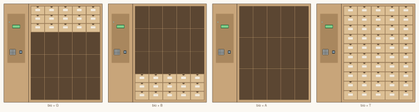
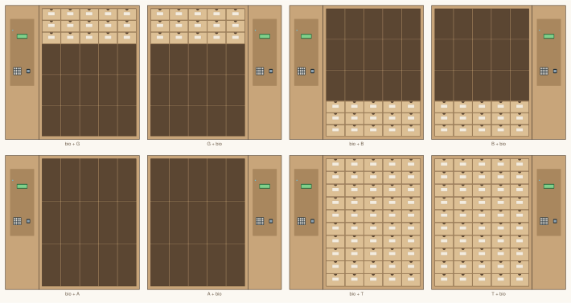
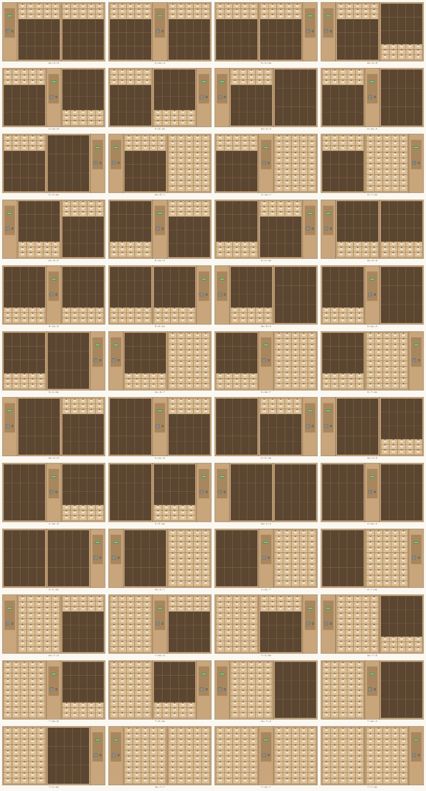
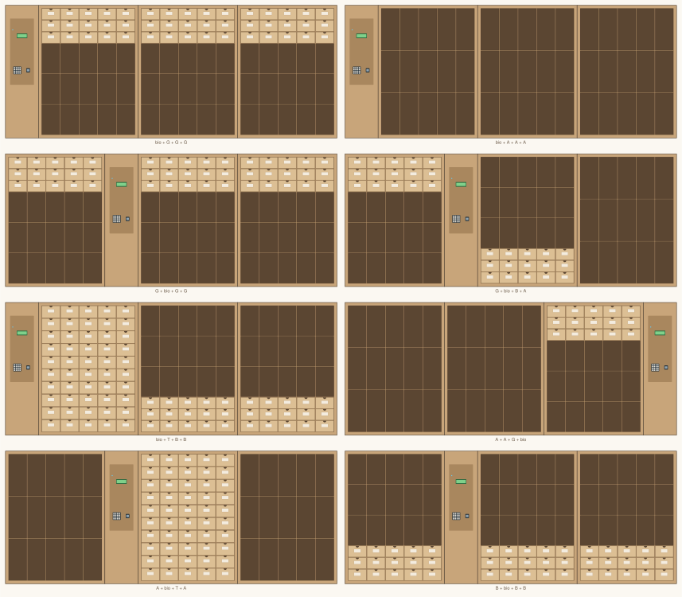
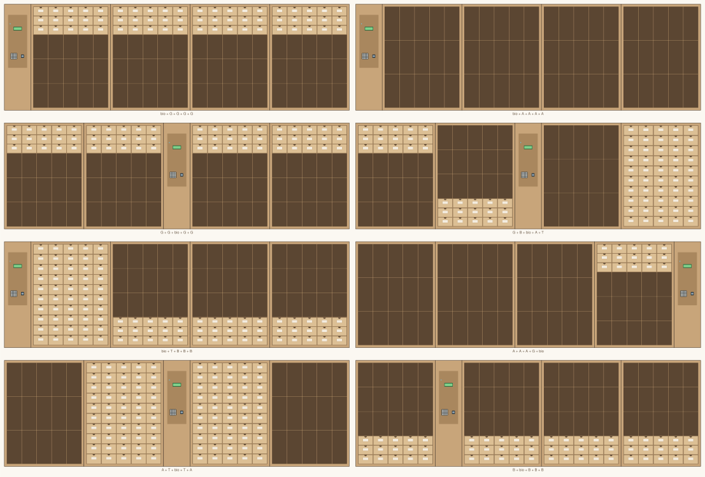
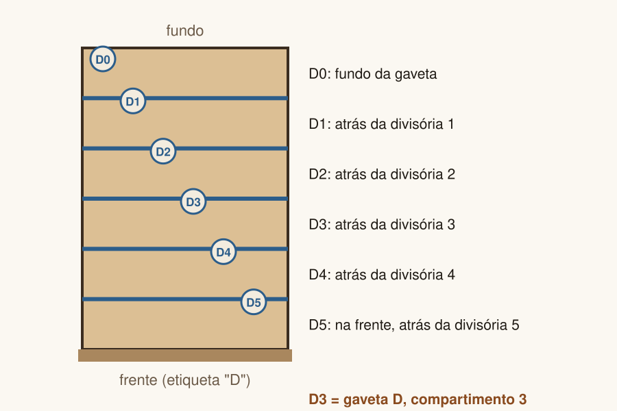
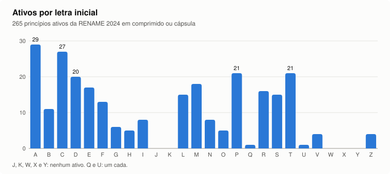
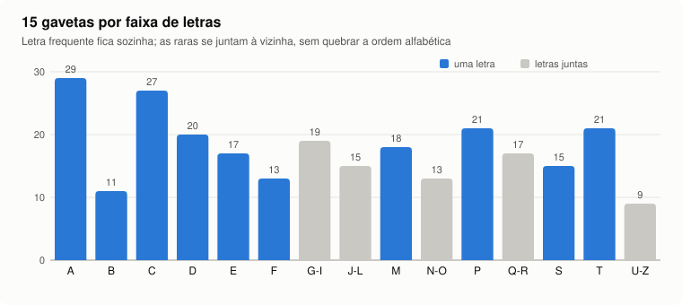

Hiperpersonalização com peça padrão
Cada hospital, cada ala e cada perfil de paciente pede um estoque diferente: mais comprimido aqui, mais fralda e seringa ali. Em vez de desenhar um armário para cada caso, o projeto define poucas peças padrão e deixa a combinação resolver.
- Mesma altura e mesma profundidade nos dois módulos (1000 e 250 mm): qualquer um encosta em qualquer outro.
- Um único módulo biométrico pode comandar a fileira inteira, em qualquer posição: na ponta, no meio, entre dois armários.
- O miolo do armário é uma grade de ripas a meia-madeira, como um jogo da velha. Mudar onde entram as ripas horizontais muda o que o armário guarda, sem mudar a casca.
- Tudo sai de um JSON: trocar uma medida e rodar o gerador refaz as peças e as cargas da cortadora.
Os quatro miolos do armário
Nicho de 704 x 954 mm, 5 colunas, gaveta de 88 mm de altura.

| Miolo | Arranjo | Gavetas | Vãos abertos |
|---|---|---|---|
| G gavetas em cima | 3 fileiras de gaveta sobre 3 fileiras de vão (o montado no protótipo) | 15 | 15 de ~230 mm |
| B gavetas embaixo | vãos em cima, gavetas na altura da mão | 15 | 15 de ~230 mm |
| A só nichos altos | 3 fileiras de vão | 0 | 15 de ~318 mm |
| T só gavetas | 10 fileiras | 50 | 0 |
As combinações
Com n armários há n + 1 lugares para o biométrico e 4 miolos para cada armário: (n + 1) x 4n.
| Armários | Largura | Montagens |
|---|---|---|
| 1 | 1,00 m | 2 x 4 = 8 |
| 2 | 1,75 m | 3 x 16 = 48 |
| 3 | 2,50 m | 4 x 64 = 256 |
| 4 | 3,25 m | 5 x 256 = 1280 |
| Total | 1592 |
1 biométrico + 1 armário: todas as 8

1 biométrico + 2 armários: todas as 48

1 biométrico + 3 armários: 8 das 256

1 biométrico + 4 armários: 8 das 1280

Como achar um medicamento: o índice D0 a D5
Um endereço de duas partes, como página e linha de dicionário.
As 15 gavetas seguem faixas de letra tiradas da RENAME 2024, a Relação Nacional de Medicamentos Essenciais do SUS: A, B, C, D, E, F, G-I, J-L, M, N-O, P, Q-R, S, T, U-Z. Dentro de cada gaveta, até 5 divisórias criam até 6 compartimentos. Cada divisória tem uma orelha redonda, em escada, que nomeia o compartimento à frente dela; o fundo da gaveta é o 0.

- D3 é a gaveta D, compartimento 3. A5 é a gaveta A, compartimento da frente. A0 é o fundo da gaveta A.
- Gaveta sem divisória é toda 0. Divisórias vêm em jogos completos: quem tem a 4 tem a 3, a 2 e a 1.
- Nada é gravado com letra. As etiquetas são coladas, então a farmácia reorganiza o gaveteiro sem cortar peça nova.
- Quantidade de divisórias proporcional aos ativos de cada faixa: 44 no total, cortadas no miolo da porta, que ia virar sobra.
A pesquisa na RENAME 2024
Da tabela do Apêndice A (páginas 26 a 122 do PDF oficial, Portaria GM/MS nº 6.324 de 26/12/2024) entraram só as linhas em comprimido, cápsula ou drágea, contadas pelo princípio ativo sem o sal: cloridrato de metformina conta como metformina, na M. Resultado: 265 princípios ativos. A letra A sozinha tem 29; J, K, W, X e Y não têm nenhum. Uma programação dinâmica testou cada número de gavetas e escolheu as faixas que deixam a gaveta mais cheia a menor possível. A partir de 13 gavetas o piso de 29 é atingido; 15 fecha a grade de 5 colunas.

